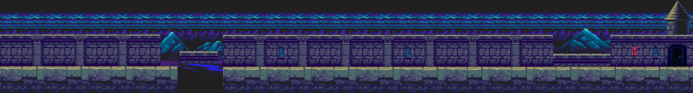
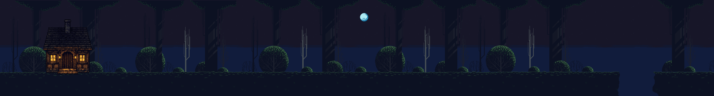
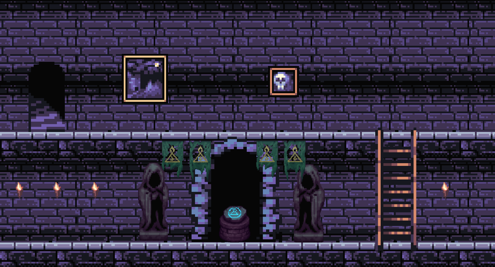
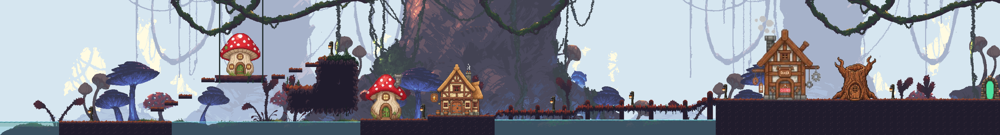

Archivo de Proyectos
Proyectos desarrollados durante mi formación
técnica y aprendizaje en programación,
diseño web y desarrollo de videojuegos.
Videojuego desarrollado junto a compañeros
utilizando Unity como práctica de diseño
y desarrollo de videojuegos.
Java
Diseño de niveles
Trabajo en equipo
Proyecto enfocado en creatividad,
lógica básica y desarrollo colaborativo.
Segunda entrega del proyecto original,
incorporando mejoras visuales,
nuevas mecánicas y expansión de niveles.
Java
Game Design
Diseño de niveles
Participé en el desarrollo y composición
de escenarios utilizando assets externos
y recursos digitales.




Desarrollo de múltiples proyectos
realizados junto a compañeros como práctica
de programación orientada a objetos
y lógica computacional.
Java
Interfaces gráficas
POO
Lógica
- Arkanoid
- Pong
- Space Invaders
- Calculadora con interfaz gráfica
Estos proyectos permitieron fortalecer
habilidades de resolución de problemas,
programación y trabajo colaborativo.